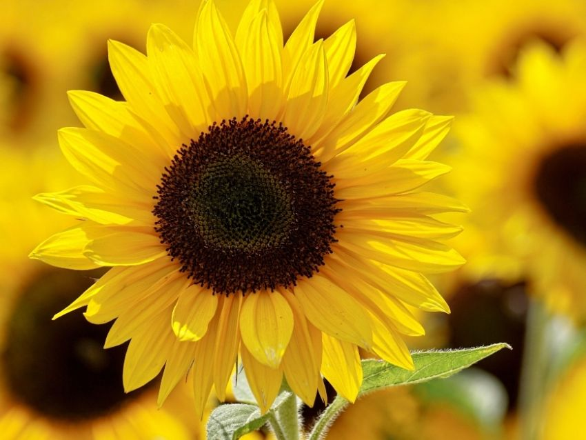
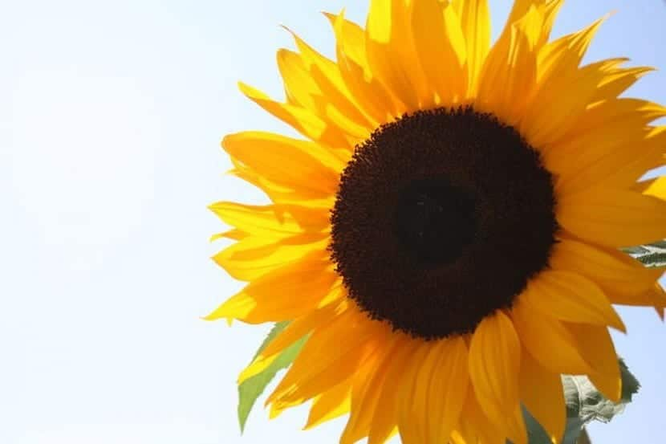

Girasol es una planta herbácea de la familia asterácea, de nombre científico helianthus annuus, que se caracteriza por tener flores amarillas, frutos comestibles y tallos robustos y erguidos. No obstante, el girasol también recibe otros nombres como mirasol, flor del Sol, maíz de tejas, entre otros.

Cada día, los girasoles se despiertan y se mueven hacia el Sol, siguiendo al astro en su ruta de este a oeste, como agujas de un reloj. A la noche vuelven a hacerlo en sentido contrario para esperar su salida en la mañana del día siguiente. Pero un día dejan de hacerlo; alcanzan la madurez y detienen su danza.
La flor del girasol se orienta al sol durante su crecimiento. Las hormonas que controlan los genes de crecimiento de los girasoles hacen que el lado orientado al este del tallo crezca con más fuerza durante el día. Este desequilibrio hace que poco a poco la planta gire siguiendo al Sol.
